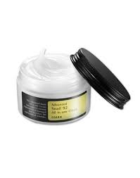

Preparation for Oily Skin Makeup
Before applying makeup to oily skin, it's important to prepare your skin for a matte and long-lasting finish. Follow these steps:
- Cleanser: Start with a gentle cleanser to remove excess oil and create a clean canvas.
- Oil-free Moisturizer: Choose an oil-free moisturizer to keep your skin hydrated without adding extra oil. 
- Matte Primer: Apply a mattifying primer to create a smooth and oil-absorbing base for makeup.

Mulailah dengan mengoleskan pelembap bebas minyak untuk memberi kelembapan pada kulit tanpa menambahkan minyak berlebih. Biarkan meresap sepenuhnya.

Aplikasikan primer matte untuk mengontrol minyak dan menciptakan dasar yang halus untuk makeup Anda.
Makeup Steps for Oily Skin
Follow these steps to achieve a natural look on oily skin while controlling excess shine:
- Matte Cushion
- Oil-Free Concealer
- Oil-Control Powder
- Powder Blush
- Eye Shadow
- Mascara
Gunakan cushion dengan hasil matte dan bebas minyak untuk hasil yang bebas kilap. Aplikasikan dengan merata menggunakan spons makeup.
Gunakan concealer bebas minyak untuk menutupi bintik-bintik atau kemerahan. Blending untuk tampilan yang rata.
Gunakan bedak tabur di area-area yang cenderung berminyak atau untuk mengatasi kilap berlebih.
Pilihlah blush powder untuk menambahkan warna pada pipi Anda. Aplikasikan dengan hemat untuk menghindari kilap berlebih.

Gunakan eyeshadow matte dalam warna netral. Aplikasikan warna terang di kelopak mata, warna sedikit lebih gelap di lipatan mata, dan garis kelopak mata dengan warna gelap matte.

Gunakan maskara pemberi volume untuk mempertegas bulu mata Anda. Aplikasikan dari akar hingga ujung.
Setting Your Makeup
To prevent makeup from cracking and control oil, use a setting spray with a matte finish. This will help your makeup last longer without becoming greasy.